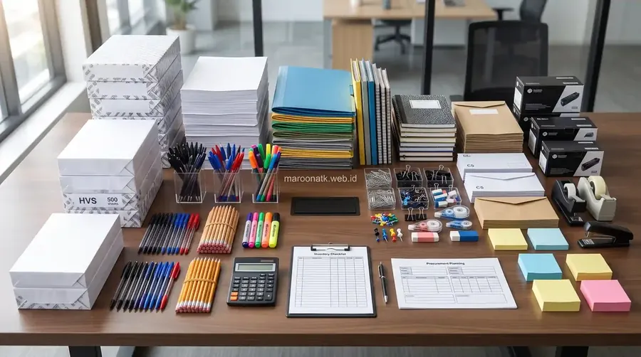

Mengapa Cara Menghitung Kebutuhan ATK Kantor yang Akurat Sangat Krusial?
Cara menghitung kebutuhan ATK kantor yang akurat adalah metode sistematis mengestimasi volume perlengkapan alat tulis dan kertas berdasarkan jumlah karyawan aktif, data konsumsi riil 3–6 bulan sebelumnya, safety stock (15%–25%), serta lead time supplier. Pendekatan ini mencegah terjadinya stockout (kehabisan stok yang menghentikan produktivitas divisi) sekaligus mengeliminasi overstock (penumpukan barang di gudang yang merusak likuiditas biaya operasional perusahaan).
Bagi divisi Purchasing, Procurement, maupun General Affair (GA) di berbagai perusahaan dan instansi di Indonesia, pengelolaan alat tulis kantor sering kali dianggap sebagai urusan rutin yang sederhana. Namun pada praktiknya, tanpa metode perhitungan yang terstandarisasi, pengadaan sering kali hanya didasarkan pada perkiraan kasual (rule of thumb) atau sekadar mengulang kuantitas pesanan bulan sebelumnya.
Akibatnya, perusahaan sering menghadapi dua masalah ekstrem: di satu sisi dokumen penting tertunda dicetak karena kehabisan kertas HVS atau toner printer di akhir bulan, sementara di sisi lain gudang penyimpanan dipenuhi ratusan map ordner dan kotak pulpen yang tidak terpakai selama berbulan-bulan. Mengetahui produk ATK apa saja yang harus diprioritaskan dan bagaimana menghitung jumlahnya adalah kunci efisiensi supply chain internal.

Mengenal Keuntungan Sistem Paket Pengadaan Alat Tulis Kantor B2B
Strategi beralih ke kontrak paket pengadaan terpadu guna menyederhanakan administrasi faktur dan menjamin stabilitas suplai bulanan.
Data Penting yang Wajib Dikumpulkan Sebelum Menghitung ATK
Sebelum purchasing staff membuka spreadsheet untuk membuat Purchase Requisition (PR), terdapat empat variabel data fundamental yang harus diverifikasi secara valid:
- Headcount Pengguna per Divisi: Klasifikasikan pengguna berdasarkan intensitas pemakaian. Divisi Finance, Legal, dan HR umumnya mengonsumsi kertas dan map 3–4 kali lebih banyak dibandingkan divisi Engineering atau IT.
- Data Pemakaian Historis (Run Rate): Rata-rata konsumsi fisik aktual per bulan yang diambil dari data pengeluaran gudang (stock card) selama minimal 3 bulan terakhir.
- Sisa Stok Fisik di Gudang (Stock On Hand): Hasil stock opname fisik sebelum pemesanan baru dilakukan, bukan sekadar angka di sistem software.
- Lead Time Supplier: Rentang waktu antara tanggal penerbitan Purchase Order (PO) hingga barang fisik tiba di gudang kantor (misalnya 2–5 hari kerja untuk vendor di wilayah Jakarta dan Surabaya).
Rumus Sederhana Menghitung Kebutuhan ATK Kantor
Untuk menghitung total kuantitas barang yang harus dipesan ke supplier, gunakan formula matematis inventaris berikut:
Formula Estimasi Kebutuhan Pengadaan Bersih:
Kuantitas Pesanan = (Rata-rata Konsumsi Bulanan × Periode Pengadaan) + Safety Stock - Sisa Stok Fisik
Di mana komponen-komponennya didefinisikan sebagai berikut:
- Rata-rata Konsumsi Bulanan (Monthly Usage): Total unit yang habis dipakai seluruh divisi dalam satu bulan kalender kerja.
- Safety Stock (Cadangan Pengaman): Buffer stock untuk mengantisipasi lonjakan kebutuhan mendadak atau keterlambatan pengiriman vendor, umumnya ditetapkan sebesar 15% hingga 25% dari konsumsi bulanan normal.
- Sisa Stok Fisik: Jumlah persediaan yang masih layak pakai di lemari penyimpanan saat perhitungan dilakukan.

Pemeriksaan kartu stok fisik secara berkala menjadi fondasi utama penentuan safety stock dan estimasi pengadaan yang presisi.
Panduan Menghitung Kebutuhan per Kategori Barang
1. Cara Menghitung Kebutuhan Kertas HVS (A4 & F4)
Kertas HVS merupakan komponen biaya terbesar dalam kelompok ATK (dapat mencapai 40%–55% dari total belanja ATK). Cara menghitungnya:
- Hitung rata-rata lembar cetak per staf per hari kerja (rata-rata korporat di Indonesia adalah 10–25 lembar/hari/staf untuk staf operasional biasa, dan 40–60 lembar/hari untuk staf Finance/Tax/Legal).
- Kalikan dengan jumlah hari kerja efektif sebulan (umumnya 21–22 hari kerja).
- Bagi total lembar dengan 500 (karena 1 rim = 500 lembar kertas).
- Contoh Simulasi: Kantor dengan 50 karyawan mengonsumsi rata-rata 15 lembar/orang/hari. Total konsumsi harian = 750 lembar. Konsumsi bulanan (22 hari) = 16.500 lembar = 33 rim. Tambahkan safety stock 20% (7 rim) = 40 rim. Jika di gudang tersisa 8 rim, maka pesanan bulan ini adalah 32 rim.
2. Cara Menghitung Kebutuhan Pulpen & Marker
Pulpen memiliki siklus pakai 3–6 minggu tergantung intensitas tanda tangan dan pencatatan manual. Standar alokasi perkantoran adalah 1 hingga 2 batang pulpen per staf per bulan. Untuk spidol whiteboard ruang meeting, estimasikan 1 set per ruang rapat per bulan.
3. Cara Menghitung Kebutuhan Toner Cartridge Printer
Kapasitas toner dihitung berdasarkan page yield dengan standar cakupan cetak 5% (ISO/IEC 19752). Cartridge standar mampu mencetak 1.500 hingga 2.500 halaman dokumen teks. Jika kebutuhan kertas kantor Anda adalah 30 rim (15.000 lembar) per bulan, maka kantor Anda membutuhkan sekitar 6–8 cartridge toner per bulan untuk seluruh printer jaringan yang aktif.
4. Cara Menghitung Kebutuhan Map, Ordner, & Filing Folder
Kebutuhan ordner dan filing folder tergolong slow-moving items yang sangat bergantung pada siklus tutup buku bulanan, audit pajak tahunan, atau proyek tender baru. Hitung berdasarkan jumlah transaksi berkas baru per divisi ditambah 10% cadangan penggantian map usang.

Contoh Format Proposal Pengajuan Pengadaan ATK & Inventaris Kantor
Template dan panduan penyusunan proposal TOR & RAB pengadaan ATK korporat untuk approval direksi.
Tabel Matriks Perhitungan Kebutuhan ATK Kantor Bulanan
Gunakan tabel matriks acuan berikut sebagai template praktis untuk memetakan volume belanja ATK bulanan di lingkungan kantor berkapasitas 50 karyawan:
| Jenis ATK | Jumlah Pengguna | Rata-rata Konsumsi | Safety Stock | Estimasi Kebutuhan Bulanan | Frekuensi Pengadaan |
|---|---|---|---|---|---|
| Kertas HVS A4 75/80gr | 50 Orang | 35 Rim / bulan | 7 Rim (20%) | 42 Rim | Bulanan (Rutin) |
| Kertas HVS F4 75gr | 15 Orang (Legal/HR) | 10 Rim / bulan | 2 Rim (20%) | 12 Rim | Bulanan (Rutin) |
| Pulpen Gel Hitam / Biru | 50 Orang | 60 Pcs / bulan | 12 Pcs (20%) | 6 Box (72 Pcs) | Bulanan (Rutin) |
| Toner Cartridge Printer | 4 Unit Printer Sentral | 4 Cartridge / bulan | 1 Cartridge (25%) | 5 Cartridge | Bulanan (Rutin) |
| Ordner / Map Arsip Tebal | Divisi Finance & GA | 15 Buah / bulan | 3 Buah (20%) | 18 Buah | Triwulan / Bulanan |
| Sticky Notes & Paper Clip | 50 Orang | 20 Pad / 10 Kotak | 4 Pad / 2 Kotak | 24 Pad / 12 Kotak | Dua Bulanan |
Untuk menjaga agar alur pengadaan berjalan otomatis, departemen purchasing perlu menetapkan tiga batas parameter kuantitatif:
- Minimum Stock (Batas Kritis): Titik stok terendah sebelum pesanan baru tiba di kantor. Jika stok menyentuh angka ini, purchasing harus mempercepat pengiriman vendor. Formula: Safety Stock.
- Re-Order Point (ROP): Titik waktu pemesanan ulang ke vendor. Formula: (Konsumsi Harian × Lead Time Vendor) + Safety Stock.
- Maximum Stock: Batas tertinggi kapasitas simpan gudang agar modal kerja tidak mengendap dan barang tidak kedaluwarsa. Formula: ROP + Kuantitas Pemesanan Ekonomis (EOQ).
Strategi Menghindari Overstock dan Stockout di Kantor
Ketidakseimbangan stok ATK membawa dampak langsung terhadap beban finansial. Pelajari lebih lanjut mengenai cara menghemat OPEX ATK kantor melalui langkah-langkah praktis pengendalian inventaris:
- Sentralisasi Penyimpanan: Kunci lemari ATK di bawah kendali satu orang penanggung jawab (GA Officer). Hindari membagikan barang secara bebas tanpa nota pengambilan barang internal.
- Terapkan Sistem 1-for-1 Exchange: Untuk barang bernilai menengah seperti gunting, stapler, dan kalkulator, berikan unit baru hanya jika staf menyerahkan unit lama yang telah rusak.
- Evaluasi Fluktuasi Musiman: Antisipasi lonjakan kebutuhan kertas pada periode tutup buku akhir tahun (Desember), pelaporan SPT Pajak (Maret/April), dan audit internal.

Spesifikasi dan Kelebihan Paket Pengadaan Alat Tulis Kantor Bulanan B2B
Perbandingan tingkatan paket ATK bulanan (Starter, Business, Corporate) dan estimasi kuota pemakaian rutin.
Kesalahan Umum Purchasing dalam Memperkirakan Kebutuhan ATK
Berdasarkan observasi pengadaan B2B, berikut beberapa kekeliruan yang paling sering terjadi pada purchasing staff:
- Mengabaikan Sisa Stok Fisik: Membuat PO baru dengan kuantitas yang sama persis setiap bulan tanpa mengecek sisa barang di gudang.
- Tergiur Diskon Borongan Non-Kritis: Membeli map atau binder dalam jumlah ribuan hanya karena potongan harga sesaat, padahal memakan ruang gudang selama bertahun-tahun.
- Tidak Memperhitungkan Lead Time Supplier: Melakukan pemesanan saat persediaan kertas tinggal 1 rim, padahal vendor butuh waktu 3 hari kerja untuk pengiriman.
Kesimpulan: Transformasi Pengadaan ATK Menjadi Lebih Terukur dan Efisien
Poin Penting yang Perlu Diingat
- Menghitung kebutuhan ATK secara presisi menghilangkan risiko gangguan operasional akibat kehabisan stok mendadak.
- Gunakan rumus dasar: (Konsumsi Rata-rata × Periode) + Safety Stock - Sisa Stok Riil.
- Tetapkan safety stock sebesar 15%–25% untuk barang fast-moving seperti kertas HVS dan toner printer.
- Sentralisasi distribusi ATK internal untuk memangkas pemborosan penggunaan harian staf hingga 20%.
- Manfaatkan sistem paket pengadaan B2B resmi dari Maroon ATK untuk mempermudah pemenuhan bulanan dengan harga terstandarisasi dan faktur pajak lengkap.
Butuh Bantuan Menyusun Paket Pengadaan ATK Bulanan Kantor Anda?
Konsultasikan estimasi kuantitas kebutuhan alat tulis, kertas, dan perlengkapan kantor perusahaan Anda bersama tim procurement Maroon ATK. Dapatkan katalog resmi dan penawaran harga B2B terbaik.
Pertanyaan Umum (FAQ) Seputar Perhitungan Kebutuhan ATK Kantor
Rumus dasar estimasi kebutuhan ATK bulanan adalah: Kebutuhan Pengadaan = (Jumlah Pengguna × Rata-rata Konsumsi per Orang) + Safety Stock - Sisa Stok Fisik yang Tersedia di Gudang. Rumus ini memastikan kuantitas pemesanan selalu mencerminkan kebutuhan riil tanpa risiko overstock.
Safety stock ideal untuk ATK kategori fast-moving seperti kertas HVS, toner, dan pulpen berkisar antara 15% hingga 25% dari total konsumsi bulanan normal. Angka ini disesuaikan dengan reliabilitas dan lead time pengiriman supplier Anda.
Risiko utama mencakup stockout (berhentinya operasional administrasi karena kehabisan kertas/tinta mendadak) atau overstock (penumpukan modal kerja di lemari gudang dan risiko kerusakan material seperti kertas lembap, binder berjamur, atau tinta pena yang mengering).
Pemesanan ulang harus dipicu saat sisa persediaan menyentuh Re-Order Point (ROP), yang dihitung dengan rumus: (Rata-rata Konsumsi Harian × Lead Time Supplier dalam Hari) + Safety Stock. Dengan metode ini, barang pesanan baru akan tiba tepat sebelum safety stock mulai terpakai.

Arby Ardiansyah
Praktisi manajemen inventaris dan pengadaan perlengkapan kantor B2B dengan pengalaman lebih dari 6 tahun mendampingi ratusan perusahaan, institusi perbankan, dan lembaga pendidikan di Indonesia dalam merancang sistem procurement ATK yang efisien, transparan, dan akuntabel.